Engrane impulsado del contraeje
- Aro de rodamiento externo del cojinete de rodillos cónicos
- Cojinete de rodillos cónicos
- Piñón del contraeje impulsor
- Engrane impulsado del contraeje
- Cojinete de rodillos cónicos
- Aro de rodamiento externo del cojinete de rodillos cónicos


Herramientas necesarias
DW240-160 Adaptador de aro de rodamiento externo del cojinete de rodillos cónicos de la carcasa de la caja de cambios
DW240-170 Mango del adaptador
Procedimiento de desmontaje
- Con un extractor apropiado, retire el cojinete de rodillos cónicos del lado de la carcasa de la caja de cambios.
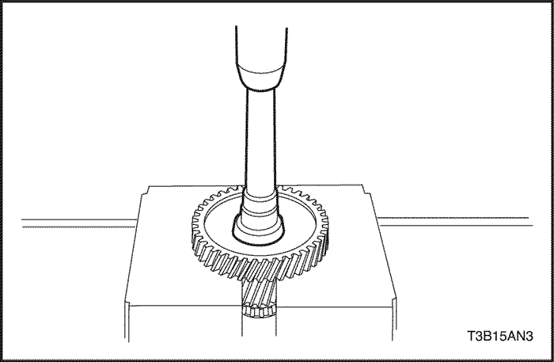
- Retire el engrane impulsado del contraeje con una prensa.

- Con un extractor apropiado, retire el cojinete de rodillos cónicos.
- Con un extractor apropiado, retire el aro de rodamiento del cojinete de rodillos cónicos externo y el asiento de la carcasa de la caja de cambios.
- Con un extractor apropiado, retire el aro de rodamiento externo del cojinete de rodillos cónicos del alojamiento de la caja de cambios.

Procedimiento de montaje
- Instale un nuevo aro de rodamiento externo del cojinete de rodillos cónicos en el alojamiento de la caja de cambios.
Aviso: Presione el aro de rodamiento externo del cojinete de rodillos cónicos para ajustarlo en su lugar, hasta que haga contacto con el alojamiento de la caja de cambios.
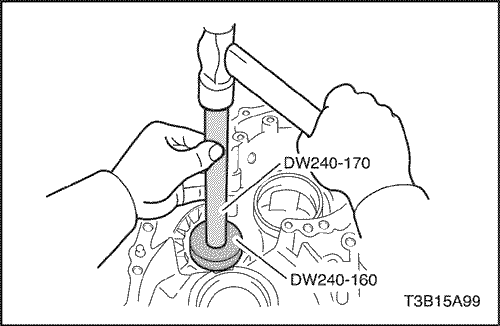
- Instale el asiento a la carcasa de la caja de cambios.
- Primero instale un asiento del mismo espesor que el anterior.
- Coloque un nuevo aro de rodamiento externo del cojinete de rodillos cónicos en la carcasa de la caja de cambios, presionándolo con ayuda del adaptador de aro de rodamiento externo del cojinete de rodillos cónicos DW240-160 y el mango adaptador DW240-170.
Aviso: Empuje el asiento hasta que haga contacto con la carcasa de la caja de cambios.
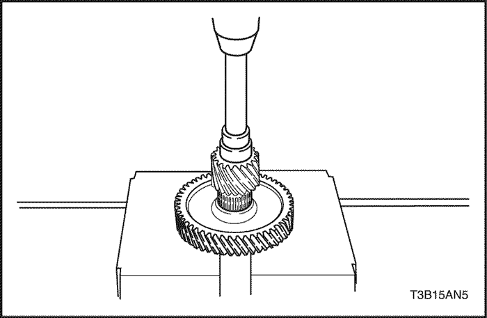
- Instale el engrane impulsado del contraeje con una prensa.
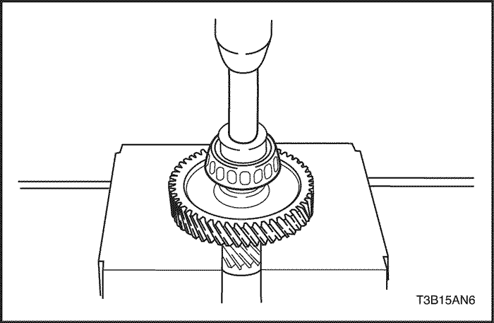
- Instale el cojinete de rodillos cónicos del lado de la carcasa de la caja de cambios, utilizando una prensa.

- Instale el cojinete de rodillos cónicos del lado del alojamiento de la caja de cambios, utilizando una prensa.
Cuerpo de válvula
- Válvula manual
- Cuerpo superior de válvulas
- Placa del cuerpo de válvula
- Válvula solenoide Nº1
- Junta tórica
- Válvula solenoide Nº2
- Junta tórica
- Válvula solenoide de control de presión
- Cuerpo de válvula inferior
- Válvula solenoide de sincronización.
- Junta tórica
- Válvula solenoide de bloqueo
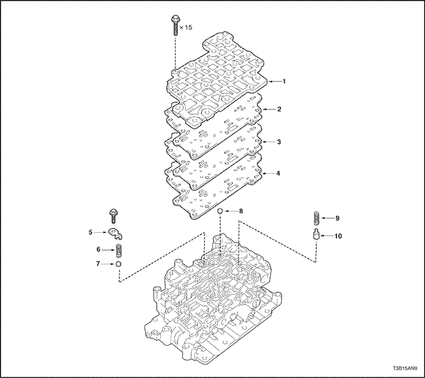
- Cubierta
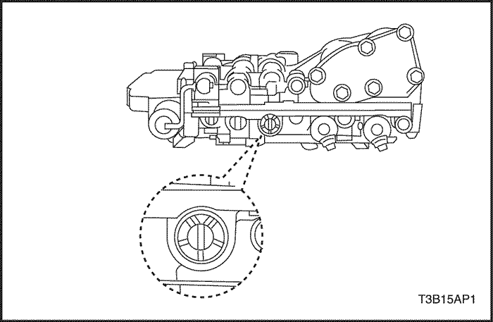
Procedimiento de desmontaje
- Tome nota de las posiciones relativas del manguito de la válvula primaria de regulación, del tapón y el pasador.
Aviso: Asegúrese de verificar la posición, ya la presión de la línea cambia conforme a la ubicación del pasador y la ranura en el extremo del manguito.
- Retire la válvula manual.
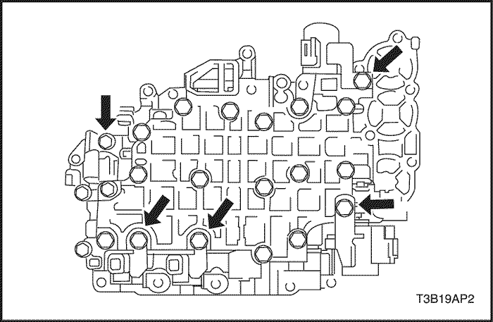
- Retire los 5 tornillos y las 5 válvulas solenoides de cambio.

- Retire los 15 tornillos.

- Retire la cubierta, las 2 juntas y la placa.
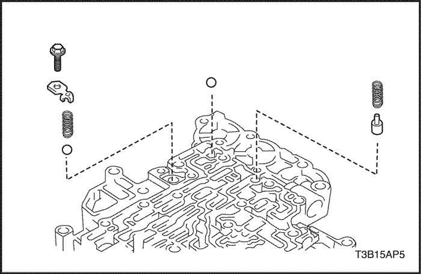
- Retire el resorte, la válvula de control y la bola de sellado.
- Retire el tornillo el asiento del resorte, el resorte y la bola.
- Voltee el cuerpo de válvulas.
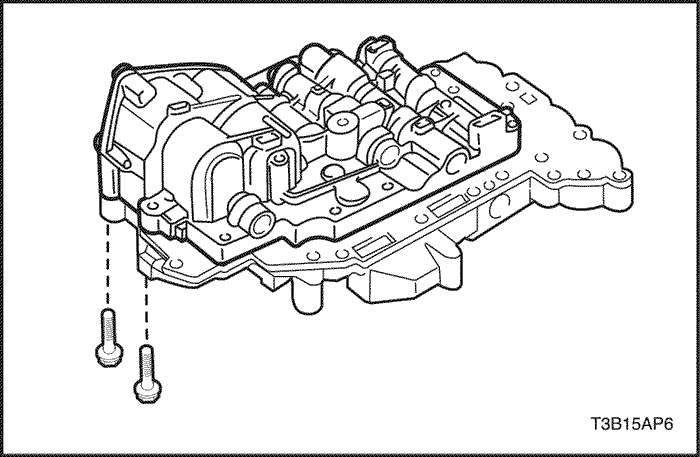
- Retire los 2 tornillos del cuerpo de válvulas.
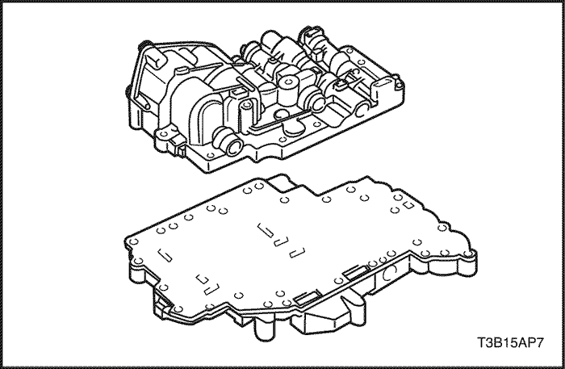
- Retire el cuerpo superior de válvulas del cuerpo inferior con placa.
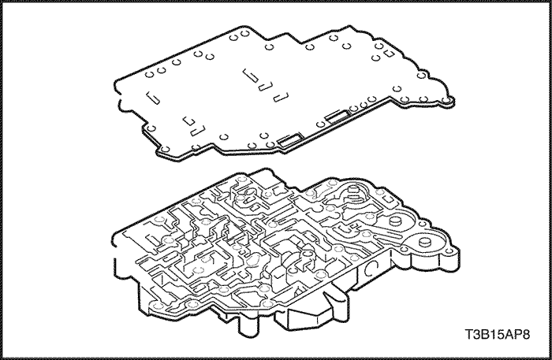
- Retire la placa del cuerpo de válvulas del cuerpo inferior.
Aviso: Tenga cuidado de no dejar caer las bolas de sellado.
Procedimiento de montaje
- Instale la placa del cuerpo de válvulas al cuerpo inferior.
- Instale el cuerpo superior de válvulas al cuerpo inferior con placa.

- Instale los 2 tornillos al cuerpo de válvulas.
Apretar
Apriete los tornillos a 11 N•m (97 lb-in).
- Tornillo A: 49 mm (1,93 in.)
- Tornillo B: 36 mm (1,42 in.)
- Voltee el cuerpo de válvulas.

- Instale la válvula de control, el resorte y la bola de sellado.
- Instale la bola, resorte, asiento del resorte y tornillo.
Apretar
Apriete los tornillos a 6.5 N•m (57 lb-in).
- Instale las dos juntas, placa y cubierta del cuerpo inferior de válvulas.
- Primero apriete provisionalmente los tornillos indicados por las flechas y después apriete provisionalmente los otros tornillos.
- Apriete completamente todos los tornillos.
Apretar
Apriete los tornillos a 11 N•m (97 lb-in).
- Tornillo A: 49 mm (1,93 in.)
- Tornillo B: 20 mm (0,79 in.)
- Tornillo C: 60 mm (2,36 in.)
- Instale las 5 válvulas solenoides con los 6 tornillos.
Apretar
Apriete los tornillos a 11 N•m (97 lb-in).
- Tornillo A: 49 mm (1,93 in.)
- Tornillo B: 20 mm (0,79 in.)
- Instale la válvula manual.
- Asegúrese de que la válvula reguladora primaria está colocada en el mismo lugar de donde fue retirada.
Cuerpo superior de válvulas
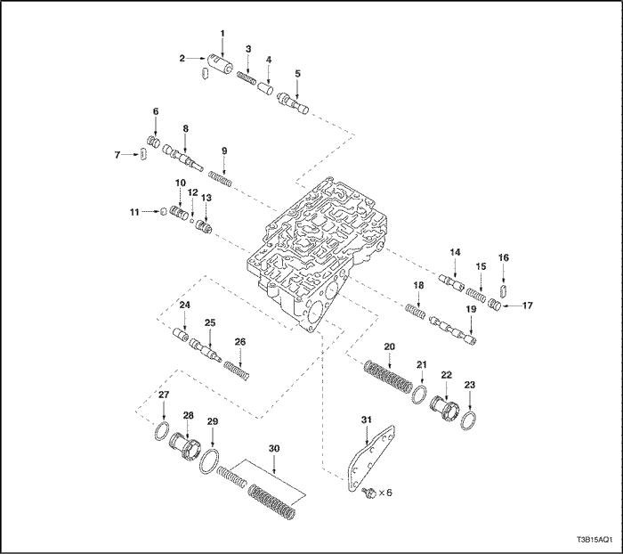
- Manguito
- Llave
- Muelle
- Buzo
- Válvula de control de bloqueo
- Tapón
- Llave
- Válvula reguladora secundaria
- Muelle
- Válvula de control Nº2
- Llave
- Bola
- Válvula de control Nº1
- Válvula de control inverso
- Muelle
- Llave
- Tapón
- Muelle
- Válvula de cambio 3-4
- Muelle
- Junta tórica
- Pistón acumulador del embrague inverso
- Junta tórica
- Buzo
- Válvula de sincronización de cambio 3-4
- Muelle
- Junta tórica
- Pistón acumulador del 2do freno
- Junta tórica
- Muelle
- Cubierta del cuerpo superior de válvulas
Muelle de cuerpo superior de válvulas
- Durante el remontaje, por favor consulte las siguientes especificaciones de muelles que le ayudarán aun a mejor discriminación entre los diferentes tipos de muelles.
Marca | Nombre (Color) | Distancia libre/diámetro exterior mm (in.) | Número total de bobinas |
A | Válvula de sincronización de cambio 3-4 (rosado) | 28.41 (1.1185) / 6.4 (0.252) | 10.49 |
B | Pistón acumulador del 2do freno, (ninguno) Interior | 45.90 (1.8071) / 10.5 (0.413) | 16.9 |
C | Pistón acumulador del 2do freno, (blanco) Exterior | 69.00 (2.7165) / 16.0 (0.630) | 15.1 |
D | Pistón acumulador del embrague inverso (ninguno) | 65.40(2.5748) / 17.0 (0.669) | 13.7 |
E | Válvula de cambio 3-4 (Rojo) | 25.50 (1.0039) / 9.73 (0.3831) | 7.75 |
F | Válvula reguladora secundaria (Blanco) | 34.56 (1.3606) / 8.8 (0.346) | 12.27 |
G | Válvula de control inverso (Ninguno) | 25.58 (1.0071) / 8.64 (0.3402) | 8.75 |
H | Válvula de control de bloqueo (Amarillo) | 20.87 (0.8217) / 5.55 (0.2185) | 11.15 |
Llave del cuerpo superior de válvulas
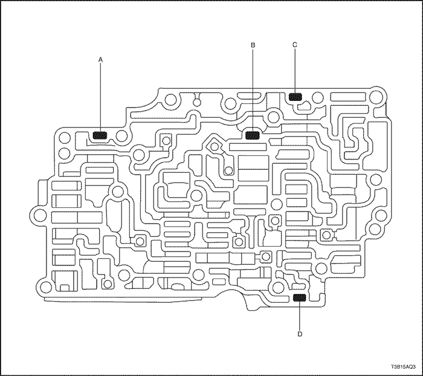
Marca | Retén | Altura/Anchura/Espesor mm (in.) |
A | Válvula de control | 11.5 (0.453) / 5.0 (0.197) / 3.2 (0.126) |
B | Válvula reguladora secundaria | 16.0 (0.630) / 5.0 (0.197) / 3.2 (0.126) |
C | Válvula de control de bloqueo | 16.0 (0.630) / 5.0 (0.197) / 3.2 (0.126) |
D | Válvula de control inverso | 11.5 (0.453) / 5.0 (0.197) / 3.2 (0.126) |
Bola de sellado del cuerpo superior de válvulas
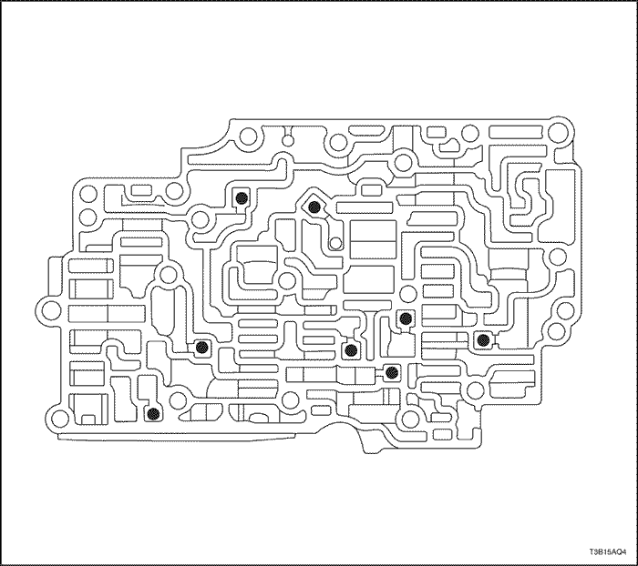
Bola de sellado mm (in.) | 5.535 (0.21791) |
Cuerpo de válvula inferior
- Llave
- Muelle
- Válvula de sincronización de cambio 4-3
- Llave
- Tapón
- Válvula de cambio 2-3
- Muelle
- Llave
- Tapón
- Válvula de cambio 1-2
- Muelle
- Llave
- Manguito
- Buzo
- Muelle
- Válvula reguladora primaria
- Llave
- Manguito
- Buzo
- Muelle
- Válvula de relé de bloqueo
- Llave
- Muelle
- Válvula de solenoide modulador
- Solenoide de colador de aceite
- Válvula modulador inferior
- Muelle
- Llave
Muelle de cuerpo de válvulas inferior
Marca | Nombre (Color) | Distancia libre/diámetro exterior mm (in.) | Número total de bobinas |
A | Válvula Nº1 de sincronización de cambio 4-3 (Ninguno) | 33.95 (1.3366) / 8.2 (0.323) | 12.5 |
B | Válvula modulador inferior (Ninguno) | 30.43 (1.1980) / 7.75 (0.3051) | 12.72 |
C | Válvula de cambio 2-3 (Rojo) | 25.50 (1.0039) / 9.73 (8.1694) | 7.75 |
D | Válvula de cambio 1-2 (Rojo) | 25.50 (1.0039) / 9.73 (8.1694) | 7.75 |
E | Válvula reguladora primaria (Ninguno) | 50.53 (1.9894) / 13.6 (0.535) | 11.07 |
F | Válvula reguladora primaria (Rojo) | 23.42 (0.9221) / 5.86 (0.2307) | 12.25 |
G | Válvula de solenoide modulador (Amarillo) | 32.13 (1.2650) / 8.0 (0.315) | 15.75 |
Llave de cuerpo de válvula inferior
Marca | Retén | Altura/Anchura/Espesor mm (in.) |
A | Válvula Nº1 de sincronización de cambio 4-3 | 36.0 (1.417) / 5.0 (0.197) / 3.2 (0.126) |
B | Válvula modulador inferior | 24.0 (0.945) / 5.0 (0.197) / 3.2 (0.126) |
C | Válvula de cambio 2-3 | 10.0 (0.394) / 5.0 (0.197) / 3.2 (0.126) |
D | Válvula de cambio 1-2 | 10.0 (0.394) / 5.0 (0.197) / 3.2 (0.126) |
E | Válvula reguladora primaria | 9.8 (0.386) / 5.2 (0.205) / 3.2 (0.126) |
F | Válvula de relé de bloqueo | 16.0 (0.630) / 5.0 (0.197) / 3.2 (0.126) |
G | Válvula de solenoide modulador | 24.0 (0.945) / 5.0 (0.197) / 3.2 (0.126) |
Caja del diferencial
- Arandela de empuje de piñón del diferencial
- Engrane piñón del diferencial
- Arandela de empuje del engrane lateral del diferencial
- Engrane lateral del diferencial
- Clavija
- Eje del piñón del diferencial
- Junta hermética de aceite
- Aro de rodamiento exterior de cojinete lateral
- Cojinete de rodillos cónicos
- Caja del diferencial
- Corona del diferencial
- Cojinete de rodillos cónicos
- Aro de rodamiento exterior de cojinete lateral
- Asiento
- Junta hermética de aceite

Herramientas necesarias
DW260-031-01 Instalador de junta hermética de aceite del alojamiento de la caja de cambios
DW260-031-02 Instalador de junta hermética de aceite de la carcasa de la caja de cambios
DW240-150 Adaptador de aro de rodamiento externo del cojinete lateral de la carcasa de la caja de cambios
DW240-140 Adaptador de aro de rodamiento del cojinete lateral del alojamiento de la caja de cambios
DW240-170 Mango del adaptador
Procedimiento de desmontaje
- Coloque las marcas de alineamiento de la corona y de la caja del diferencial.

- Retire los 8 tornillos.

- Golpee levemente la corona con un martillo de plástico para retirarla de la caja.

- Con un extractor apropiado, retire el cojinete de rodillos cónicos del lado del alojamiento de la caja de cambios.

- Con un extractor apropiado, retire el cojinete de rodillos cónicos del lado de la carcasa de la caja de cambios.

- Expulse el pasador del lado de la corona, utilizando un punzón y un martillo.

- Retire de la caja el eje del piñón del diferencial.
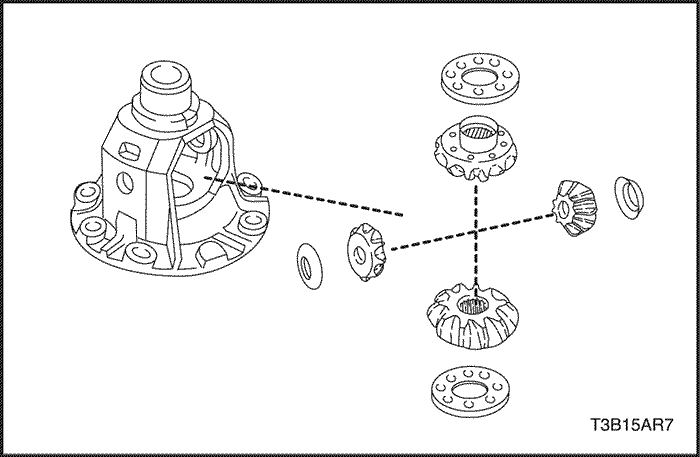
- Retire los dos engranes de piñón del diferencial, los dos engranes laterales del mismo, las 2 arandelas de empuje del piñón y las 2 arandelas de empuje del engrane lateral del diferencial.
- Retire la junta hermética de aceite del alojamiento de la caja de cambios con un destornillador.
Aviso: Tenga cuidado de no dañar el alojamiento de la caja de cambios al retirar la junta hermética de aceite usando el destornillador.
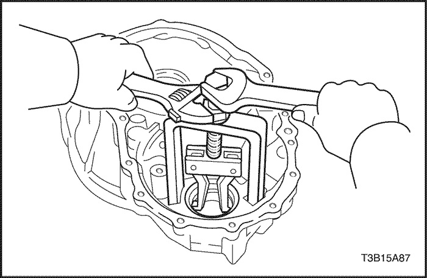
- Con un extractor apropiado, retire el aro de rodamiento exterior de cojinete lateral del alojamiento de la caja de cambios.
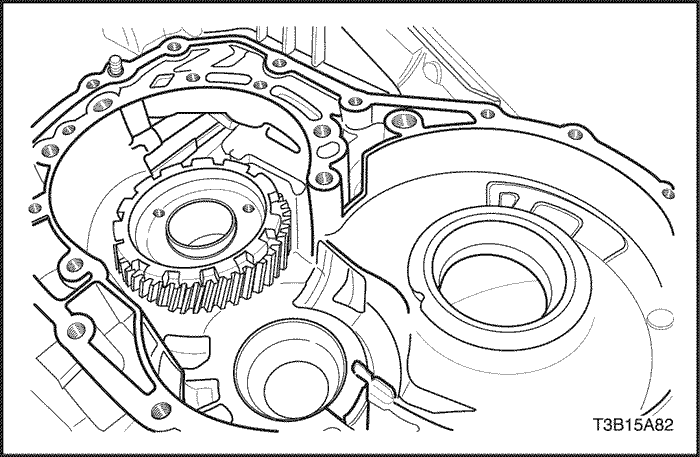
- Retire la junta hermética de aceite de la carcasa de la caja de cambios con un destornillador.
Aviso: Tenga cuidado de no dañar la carcasa de la caja de cambios al retirar la junta hermética de aceite usando el destornillador.

- Retire el aro de rodamiento exterior de cojinete lateral y el asiento, utilizando el adaptador de aro de rodamiento exterior de cojinete lateral de carcasa de la caja de cambios DW240-150 y el mango adaptador DW240-170.

Procedimiento de montaje
- Instale un nuevo aro de rodamiento exterior de cojinete lateral en el alojamiento de la caja de cambios, utilizando el adaptador de aro de rodamiento exterior de cojinete lateral de alojamiento de la caja de cambios DW240-140 y el mango adaptador DW240-170.
- Instale el asiento a la carcasa de la caja de cambios.
Aviso: Primero instale un asiento del mismo espesor que el anterior.
- Instale un nuevo aro lateral de rodamiento externo de cojinete en la carcasa de la caja de cambios.
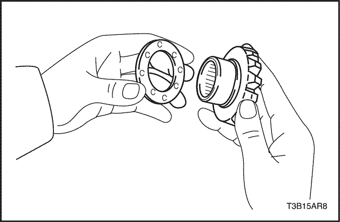
- Cubra con ATF las arandelas de empuje, engranes laterales, engranes de piñón y las arandelas de empuje de piñón.
- Instale las 2 arandelas de empuje de engrane lateral del diferencial a los 2 engranes laterales del diferencial.
- Instale los 2 engranes laterales del diferencial sus 2 arandelas de empuje, los 2 engranes de piñón y las 2 arandelas de empuje en la caja del diferencial.
- Cubra el eje del piñón con ATF.
- Instale el eje del piñón de manera que queden alineados los orificios del pasador en el eje del piñón y en la caja del diferencial.
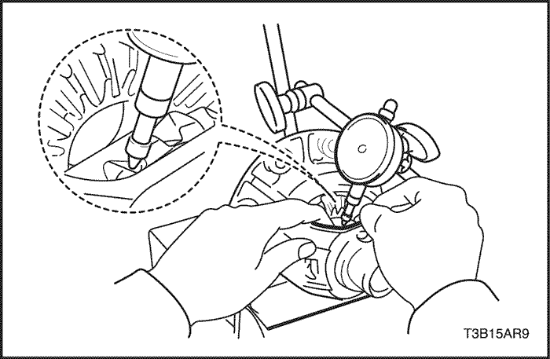
- Mida la holgura del engrane lateral mientras sostiene 1 piñón recargado contra la caja.
- 0.05 - 0.20 mm (0.0020-0.0079")
- Si la holgura está fuera de la especificación, instale una arandela de empuje adecuada en el engrane lateral para corregirlo.
- Consulte la siguiente tabla para seleccionar la arandela de empuje que asegure que la holgura queda dentro de la especificación.
- Trate de elegir arandelas del mismo tamaño para ambos lados.
- Espesor de arandela de empuje: mm (in.)
Grosor | Grosor |
0.95 (0.0374) | 1.10 (0.0433) |
1.00 (0.0394) | 1.15 (0.0453) |
1.05 (0.0413) | 1.20 (0.0472) |
- Si la holgura no está dentro de la especificación, coloque una arandela de empuje de diferente espesor.
- Encaje una nueva clavija en el eje del piñón, a través de la caja y el orificio, utilizando un punzón y martillo.

- Enclave la caja del diferencial utilizando martillo y cincel.
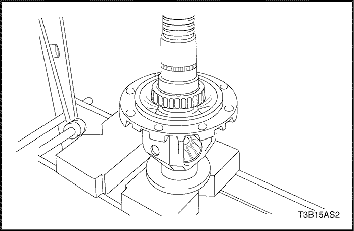
- Instale el cojinete de rodillos cónicos en la caja del diferencial utilizando una prensa.
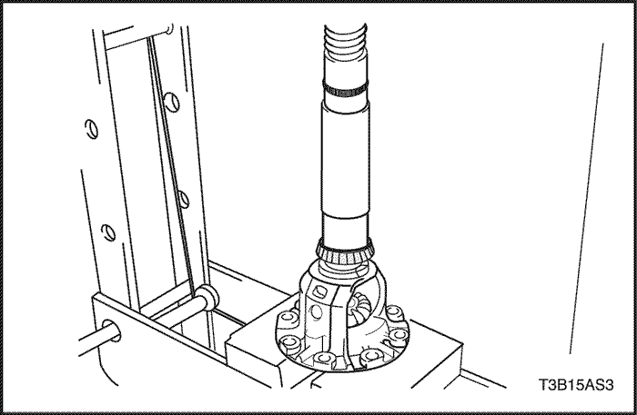
- Instale el cojinete de rodillos cónicos en la caja del diferencial utilizando una prensa.
- Retire todo resto de material de la junta fabricada en el sitio (FIPG) y tenga cuidado de no manchar con aceite las superficies de contacto del alojamiento de la caja de cambios o la carcasa de la caja de cambios.

- Instale el diferencial en la carcasa de la caja de cambios.
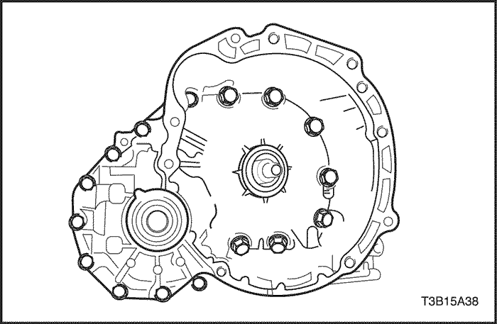
- Instale el alojamiento de la caja de cambios y coloque provisionalmente los 16 tornillos del alojamiento.
- Apriete completamente 8 o 9 de los 16 tornillos del alojamiento de la caja de cambios.
Apretar
Apriete los tornillos a 29 N•m (22 lb-ft).

- Con auxilio del adaptador de precarga del diferencial DW240-130, haga girar hacia la izquierda y derecha el engranaje diferencial 2 o 3 veces para permitir que se asiente el cojinete.

- Mida la precarga del engranaje diferencial, utilizando el adaptador de precarga del diferencial DW240-130 y una llave dinamométrica pequeña.
- Cojinete nuevo: 0,78-1,37 Nm (6,9-12,2 lb-in)
- Cojinete usado: 0.39-0.69 N.m (3.5 - 6.1 lb-in)
- Si la precarga del no cumple con la especificación, retire el diferencial de la carcasa de la caja de cambios. Vuelva a seleccionar otro asiento de ajuste lateral de la carcasa de la caja de cambios, de acuerdo a la siguiente tabla.
- Espesor del asiento de ajuste: mm (in.)
Marca | Grosor | Marca | Grosor |
A | 1.80 (0.0709) | N | 2.26 (0.0890) |
B | 1.85 (0.0728) | P | 2.29 (0.0902) |
C | 1.90 (0.0748) | Q | 2.32 (0.0913) |
D | 1.95 (0.0768) | R | 2.35 (0.0925) |
E | 2.00 (0.0787) | S | 2.40 (0.0945) |
F | 2.05 (0.0807) | T | 2.45 (0.0965) |
G | 2.08 (0.0819) | U | 2.50 (0.0984) |
H | 2.11 (0.0831) | V | 2.55 (0.1004) |
J | 2.14 (0.0843) | W | 2.60 (0.1024) |
K | 2.17 (0.0854) | X | 2.65 (0.1043) |
L | 2.20 (0.0866) | Y | 2.70 (0.01063) |
M | 2.23 (0.0878) | . | . |
- Retire los 16 tornillos del alojamiento de la caja de cambios, utilizando un martillo de plástico.
- Retire el engranaje del diferencial de la carcasa de la caja de cambios.

- Limpie la superficie de contacto de la caja del diferencial.
- Caliente la corona en agua y deje que hierva durante 10 minutos.
- Retire cuidadosamente la corona del agua.
- Después de que se haya evaporado completamente la humedad de la corona, instálela rápidamente en la caja del diferencial.
- Instale los 8 tornillos.
Apretar
Apriete los tornillos a 102 N•m (75 lb-ft).
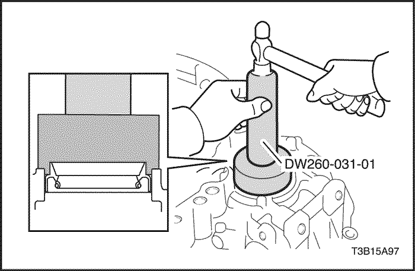
- Coloque una nueva junta hermética de aceite del alojamiento de la caja de cambios, utilizando el instalador de junta hermética de aceite del alojamiento de la caja de cambios DW260-031-01 y un martillo.
- Profundidad de la junta hermética de aceite: 3,1 mm (0,122 in.)
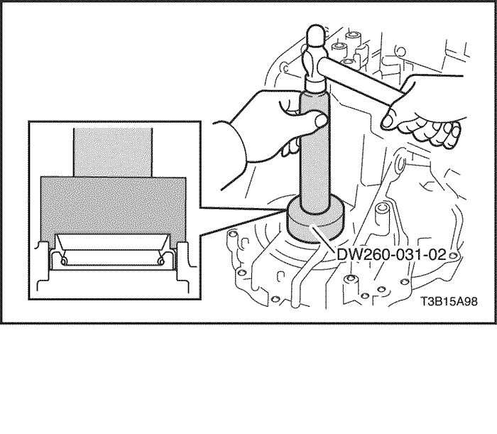
- Coloque una nueva junta hermética de aceite en la caja de la caja de cambios utilizando el instalador de junta hermética de aceite de la carcasa de la caja de cambios DW260-031-02.
- Profundidad de la junta hermética de aceite: 4,3 mm (0,169 in.)
 | |  | |
| © Copyright Chevrolet Europe. Reservados todos los derechos |